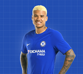

Next Birthday: Izzy Brown (07/01/1997)
Next Birthday: Kennedy (08/02/1996)
Pulisic will spend the rest of the campaign on loan with Dortmund before linking up with the Blues ahead of the 2019/20 season. The USA international, who plays as a right winger, or on the left or behind a striker, said: ‘In summer I move on to Chelsea and to a new competition, the English Premier League. It’s a privilege to have signed for such a legendary club and I look forward to working hard towards being a contributor to their team of world class players.’ Chelsea director Marina Granovskaia added: ‘We are delighted to have signed one of Europe’s most sought-after young players. Christian has shown his quality during a fantastic spell in Germany and at just 20, we believe he has the potential to become an important Chelsea player for many years to come. We look forward to welcoming him to Stamford Bridge in the summer and wish him and Dortmund every success for the remainder of the season.’
Up